本ページで使用する略語一覧
| 略語 | 正式名称 — 日本語訳 |
| HFpEF | Heart Failure with preserved Ejection Fraction — 左室駆出率の保たれた心不全 |
| LVEF | Left Ventricular Ejection Fraction — 左室駆出率 |
| LAP | Left Atrial Pressure — 左房圧 |
| LVFP | LV Filling Pressure — 左室充満圧（=平均LAPまたはその相関値） |
| PCWP | Pulmonary Capillary Wedge Pressure — 肺動脈楔入圧 |
| LVEDP | LV End-Diastolic Pressure — 左室拡張末期圧 |
| E / A | 経僧帽弁流入の拡張早期波（E）・心房収縮波（A） |
| DT | Deceleration Time — E波減速時間 |
| IVRT | Isovolumic Relaxation Time — 等容弛緩時間 |
| TDI | Tissue Doppler Imaging — 組織ドプラ法 |
| e′ / a′ / s′ | 僧帽弁輪部の拡張早期・後期・収縮期 組織ドプラ速度 |
| E/e′ | 僧帽弁E波速度 ÷ 弁輪e′速度（充満圧の指標） |
| LAVi | Left Atrial Volume index — 左房容積係数（mL/m²） |
| LARS | LA Reservoir Strain — 左房リザーバーストレイン |
| TR / PASP | Tricuspid Regurgitation — 三尖弁逆流 / Pulmonary Artery Systolic Pressure — 肺動脈収縮期圧 |
| PR / PADP | Pulmonary Regurgitation — 肺動脈弁逆流 / PA Diastolic Pressure — 肺動脈拡張期圧 |
| PV / Ar | Pulmonary Vein — 肺静脈血流 / Atrial reversal velocity — 心房収縮期逆行波 |
| GLS | Global Longitudinal Strain — 全体縦方向ストレイン |
| Vp | Flow Propagation Velocity — カラーMモード血流伝播速度 |
| MAC | Mitral Annular Calcification — 僧帽弁輪石灰化 |
| MS / MR / AS / AR | 僧帽弁狭窄 / 僧帽弁逆流 / 大動脈弁狭窄 / 大動脈弁逆流 |
| TEER | Transcatheter Edge-to-Edge Repair — 経カテーテル僧帽弁形成術 |
| HCM | Hypertrophic Cardiomyopathy — 肥大型心筋症 |
| AF | Atrial Fibrillation — 心房細動 |
| PH | Pulmonary Hypertension — 肺高血圧 |
| LVAD | Left Ventricular Assist Device — 左室補助人工心臓 |
| RHC / RAP | Right Heart Catheterization — 右心カテーテル / Right Atrial Pressure — 右房圧 |
| NP / BNP | Natriuretic Peptide — ナトリウム利尿ペプチド / B-type NP |
| τ（タウ） | Time constant of LV relaxation — 左室弛緩の時定数 |
SECTION 1 なぜ拡張機能を評価するか — 侵襲的基準とLV充満圧の定義
拡張機能評価の目的と適用範囲
心エコーによる拡張機能評価の主目的は、左室充満圧（LVFP）が上昇しているかを非侵襲的に判定し、拡張機能障害の有無・重症度（grade）を分類することにある。本ガイドラインは2016年版（ASE/EACVI）の更新で、成人の評価に適用される。一方で小児・正常妊婦・術中（術中経食道）には適用しない。単一の測定値が正常範囲内にあっても拡張機能が正常とは限らず、複数指標の整合性と臨床状況の中で解釈することが原則である。
侵襲的（カテーテル）基準値 — 何をもって異常とするか
侵襲的指標では、左室弛緩の時定数 τ >48 ms で弛緩障害、chamber stiffness constant >0.015 で左室硬化と判定する。HFpEFの血行動態的基準は安静時・運動時のPCWP/LVEDPで定義される（下表）。重要な概念として、本文書で「LV充満圧」と言う場合は平均LAP（またはその相関値である平均PCWP・LV pre-A圧）を指す。LVEDPとLAPは同一ではなく、早期の拡張障害ではLVEDPのみが上昇しLAP・平均PCWPは正常であることがある（孤立性LVEDP上昇）。
| Table 1｜LV拡張機能障害・HFpEFを示す侵襲的基準値 | 値 |
|---|---|
| 左室弛緩時定数 τ（ms） | >48 |
| 左室 chamber stiffness constant | >0.015 |
| 安静時 平均PCWP（mm Hg） | >15 |
| 安静時 LVEDP（mm Hg） | >16 |
| 運動時 平均PCWP（mm Hg） | ≥25 |
| 運動時 LVEDP（mm Hg） | ≥23 |
| 仰臥位運動時 PCWP/心拍出量 slope（mm Hg/L/min） | >2 |
心エコー指標と圧の対応（Table 2）
心エコー変数は「平均LAP/PCWPと相関するもの」と「LVEDPと相関するもの」に大別される。この区別は、孤立性LVEDP上昇（早期拡張障害）を見逃さないために重要である。
| 平均LAP/PCWP・LV pre-A圧と相関 | LVEDPと相関 |
|---|---|
| 僧帽弁E波速度 | 僧帽弁A波速度（弁尖レベル） |
| 僧帽弁E/A比 | 弁輪部でのA波 duration |
| E波減速時間（DT） | A波（弁尖レベル）の減速時間 |
| E/e′比 | 肺静脈 Ar 速度 |
| 肺静脈 S/D 比 | 肺静脈 Ar duration − 僧帽弁A duration |
| TR速度・PASP | LA最小容積 |
| PR拡張末期速度・PADP | 弁輪 a′ 速度 |
| LARS | LA pump（収縮）ストレイン |
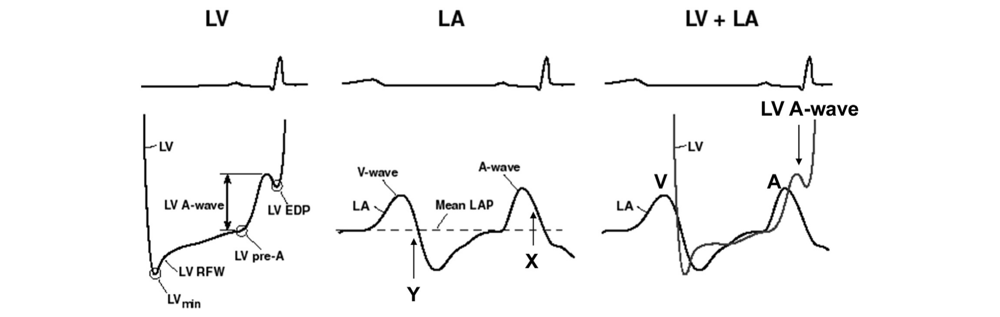
SECTION 2 正常基準範囲 — 年代別の正常値（Table 5・6）
拡張機能パラメータの年代別正常範囲（Table 5）
心血管疾患・危険因子のない集団から、第5〜95パーセンタイル限界として正常範囲が定義された。E・A・E/A・e′・E/e′・TR速度・LAVi・LARSはいずれも加齢で有意に変化する（すべてP<.001）。性差はE・A波速度のみに認められ、E/A比などには性差はない。下表は主要値の「第5パーセンタイル下限〜第95パーセンタイル上限」（年代別）。
| 測定 | 20–39歳 | 40–60歳 | 60–80歳 |
|---|---|---|---|
| E波（m/s） | 0.54–1.11 | 0.47–1.02 | 0.39–0.92 |
| A波（m/s） | 0.24–0.68 | 0.33–0.82 | 0.43–0.97 |
| E/A比 | 0.88–2.73 | 0.69–2.07 | 0.50–1.40 |
| e′ 中隔（cm/s） | 7.2–16.4 | 5.7–13.5 | 4.1–10.6 |
| e′ 側壁（cm/s） | 9.9–22.1 | 7.5–17.5 | 5.2–13.0 |
| e′ 平均（cm/s） | 8.7–19.1 | 6.7–15.4 | 4.7–11.7 |
| E/e′ 平均 | 4.0–9.1 | 4.6–11.5 | 5.2–14.0 |
| LAVi（mL/m²） | 12.1–39.4 | 12.9–38.3 | 13.7–37.1 |
| TR速度（m/s） | 1.3–2.7 | 1.5–2.7 | 1.7–2.8 |
| LA strain（%） | 29.5–63.2 | 26.8–57.7 | 24.1–52.3 |
※値は要約データからの回帰式由来。LAViは計測法（disk法 vs area-length法）、LARSはベンダーで値が異なる。
弛緩障害を示す e′ カットオフ（Table 6）
弛緩障害（impaired LV relaxation）の同定には、年代別の弁輪 e′ カットオフを用いる。診断アルゴリズム（後述 Figure 2・3）では年齢非依存のカットオフ（中隔 <6・側壁 <7・平均 <6.5 cm/s）も併用される。
| 弁輪 e′ | 20–39歳 | 40–65歳 | >65歳 |
|---|---|---|---|
| 中隔 e′（cm/s） | <7 | <6 | <6 |
| 側壁 e′（cm/s） | <10 | <8 | <7 |
| 平均 e′（cm/s） | <9 | <7 | <6.5 |
SUMMARY 第1章のキーメッセージ
SECTION 3 一次測定 — 経僧帽弁流入・TDI・LAVi・TR・肺静脈・IVRT
取得のコツ（Table 3 要点）
いずれもsweep speed 100 mm/sを基本とする。経僧帽弁流入はPWサンプル容積1–3 mmを僧帽弁尖レベルに置き、E波・A波・DT・E/A・A durationを測る（A波終末が不明瞭なら弁輪へ数mm下げる）。弁輪TDIはサンプル容積5–10 mmを中隔・側壁の付着部に置き、e′・a′・s′と平均E/e′（E ÷〔中隔e′と側壁e′の平均〕）を求める。LAViは心尖4腔・2腔の収縮末期（僧帽弁開放1–2フレーム前）でdisk法/area-length法によりトレースしBSAで除す。TR速度はCWで呼吸周期を通じ平均（sweep 50–100 mm/s）。肺静脈流入はサンプル容積を肺静脈に5–10 mm挿入しS・D・S/D・Ar速度・Ar durationを測る。IVRTは心尖長軸/5腔でLVOTを通すCWにより、大動脈弁閉鎖から僧帽弁開放までの時間を測る。
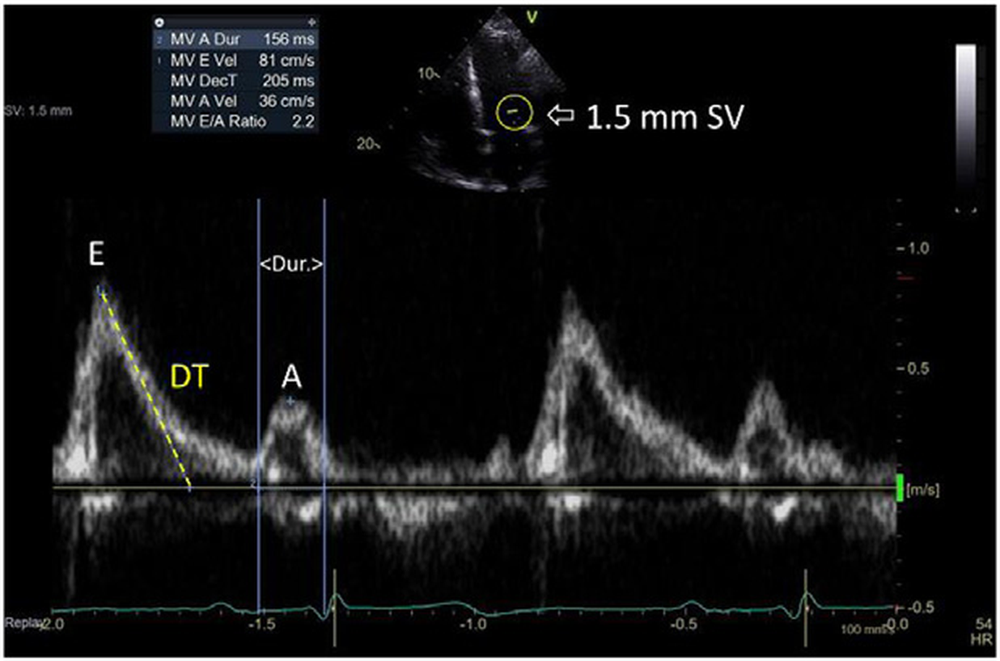
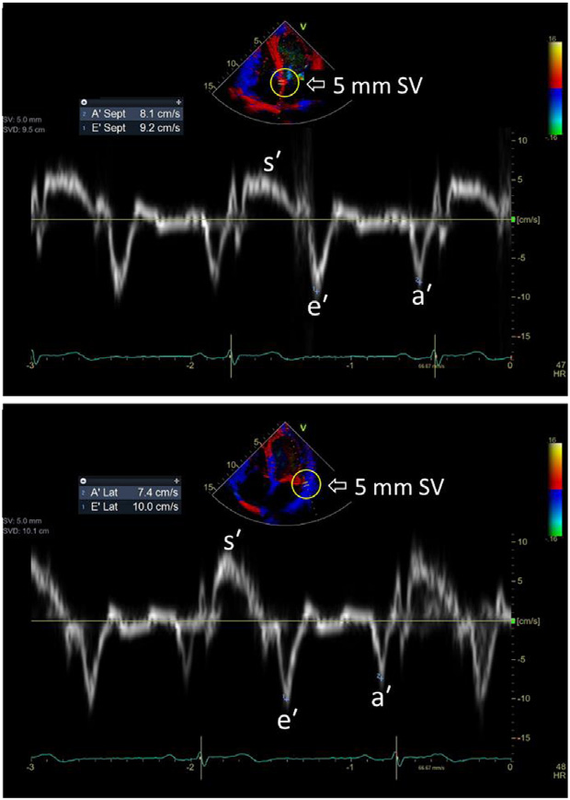
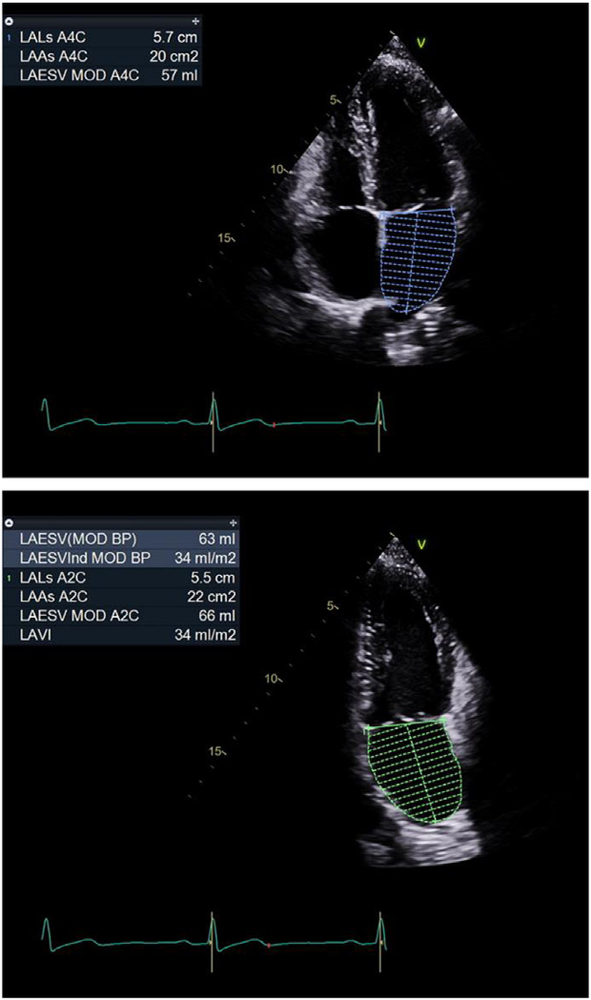
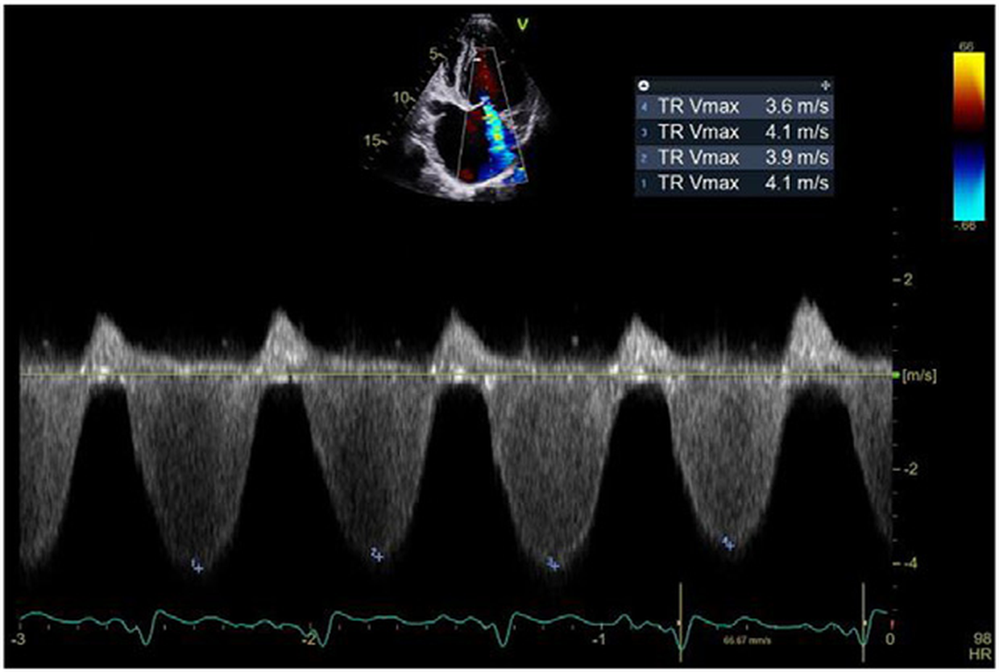
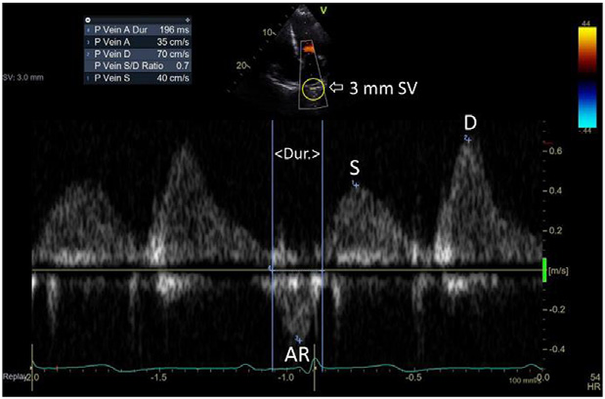
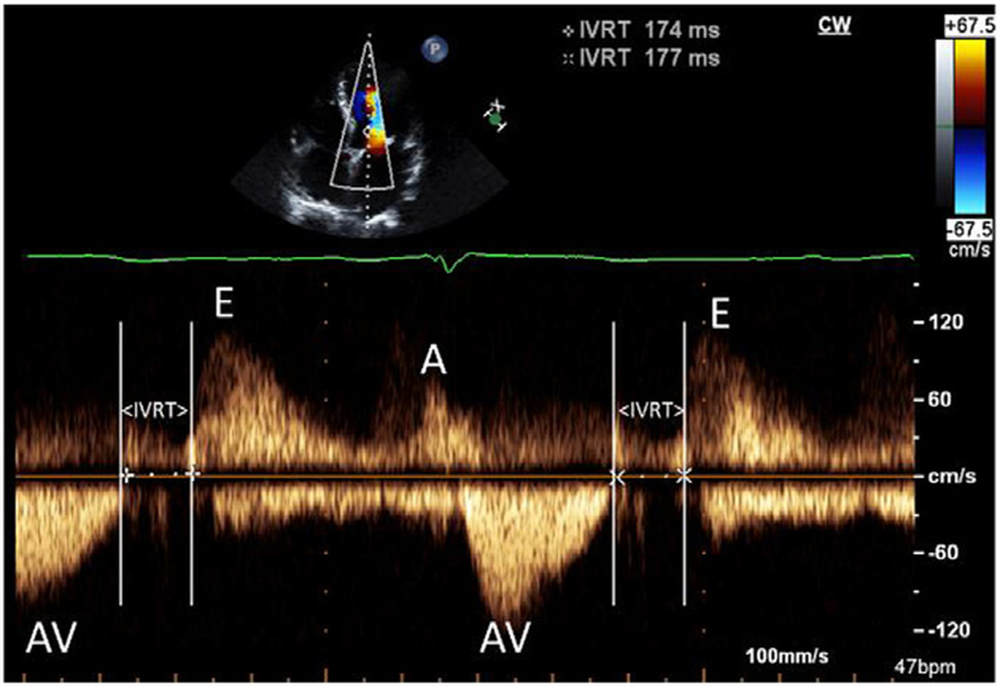
SECTION 4 二次・先進測定 — Valsalva・Vp・TE-e′・PR・GLS・LARS
補助的パラメータの使いどころ
Valsalva負荷は経僧帽弁流入の偽正常化が疑われる時に行い、適切な負荷＝E波最大速度がbaselineから>10%低下。カラーMモードVpは僧帽弁輪からLV腔内4 cmまでの早期拡張期スロープ。TE-e′はR波ピークからE波開始（TE）・e′開始（Te′）までの時間差。PR拡張末期速度はPADP→PCWP近似に用いる。LV GLSは心尖3断面でframe rate 40–80/s、心筋の90%を含むROIで取得。LA strainはframe rate 50–70/s、R-R gating法で取得し、LARS（リザーバー）・LASct（contractile）・LAScd（conduit）を求める。
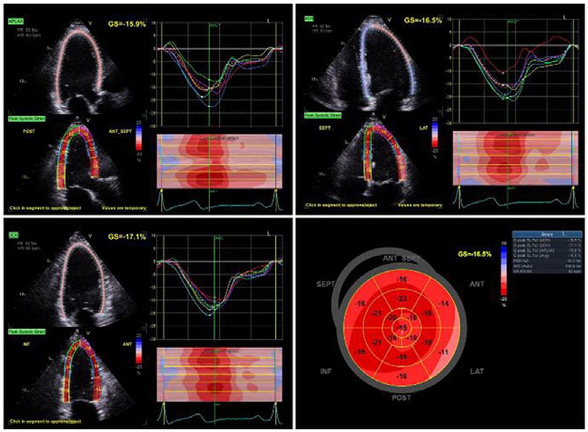
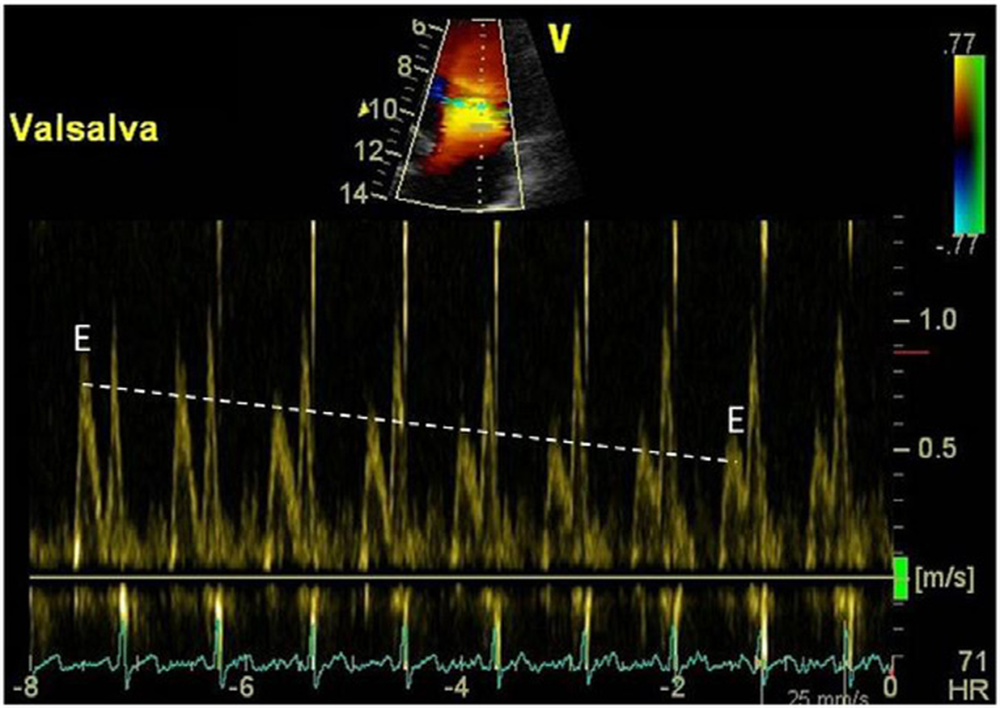
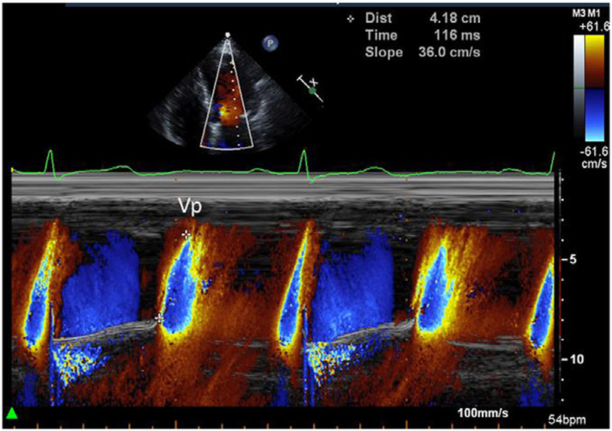
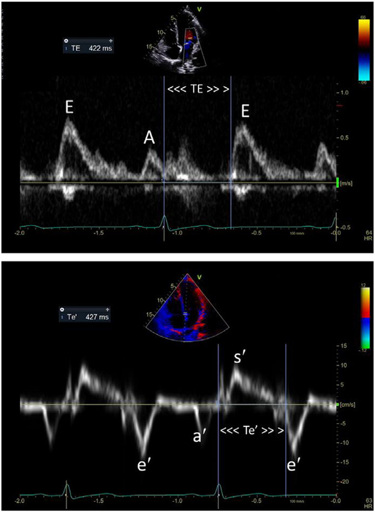
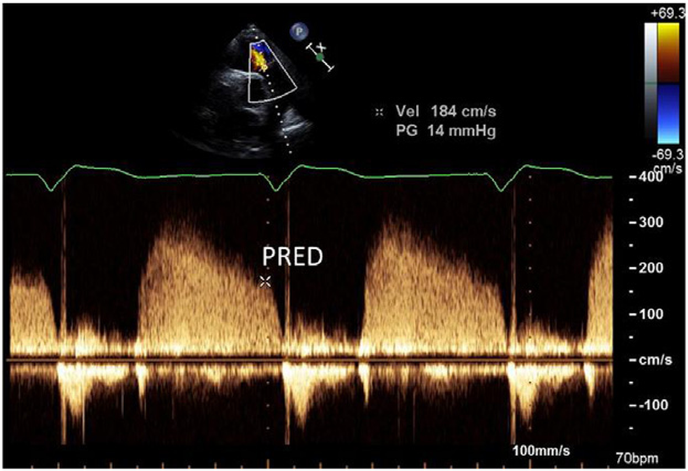
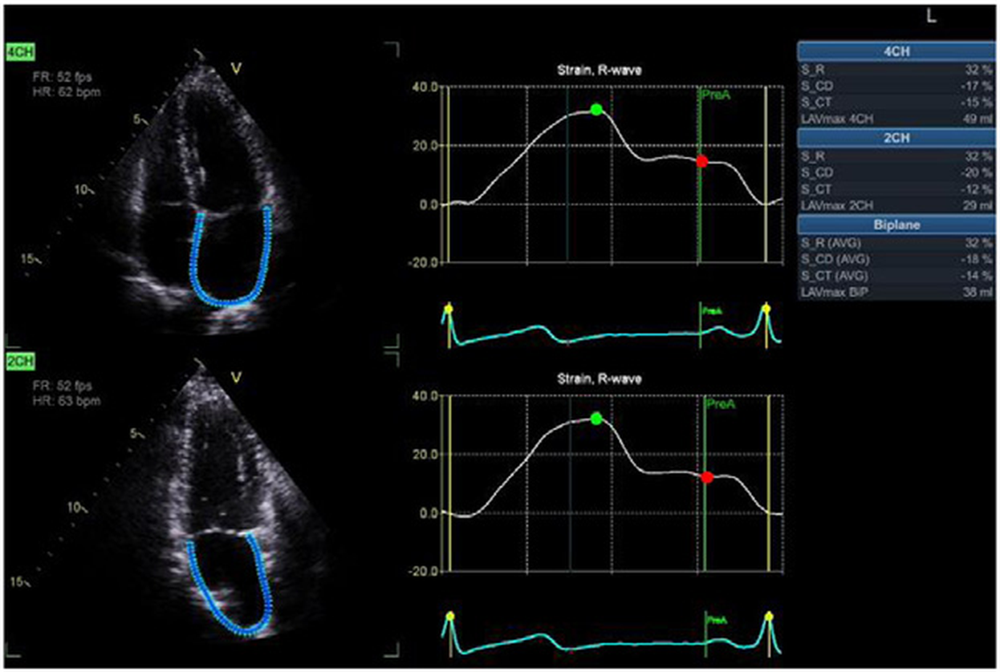
各変数の代表的カットオフ（Table 4 要点）
- E/e′：平均E/e′ <8で通常LVFP正常、>14で高LVFPに高特異度。8〜14はグレーゾーン（判定不能）。
- DT：低LVEF患者で 短いDT（<140 ms）はLVEDP上昇を高精度に示す（洞調律・AF両方）。
- A duration：短いA duration（<120 ms）はLVFP上昇を示す。
- Valsalva：E/A比 ≥50%減少またはA波速度上昇は高LVFPに高特異的。
- 肺静脈：S/D <1・systolic filling fraction <40%は低LVEF患者で高LAP。AR velocity >35 cm/sは高LVEDP。
- Ar-A duration：AR durationが僧帽弁A durationより30 ms長いと高LVEDP（年齢・EF非依存）。
- IVRT：>110 msは著明延長→LAP正常の可能性、<70 ms短縮は心疾患患者で高LAPに高特異度。
- E/Vp：≥2.5は低EF患者でPCWP>15 mm Hgを妥当な精度で予測。
- L波：三相性流入のL波 ≥50 cm/sは著明遅延弛緩＋LAP上昇を示唆。
SUMMARY 第2章のキーメッセージ
SECTION 5 拡張機能障害の有無を診断する（Figure 2）
2ステップで「拡張機能障害あり」を判定
Figure 2は拡張機能障害の「有無」を診断するアルゴリズムである（後述Figure 3＝充満圧推定とは別物）。STEP 1で弛緩障害のマーカー（e′）、STEP 2でLA/LVリモデリング・LAP上昇のマーカーを評価する。
STEP 1（弛緩障害のマーカー）：e′ 中隔 ≤6 / 側壁 ≤7 / 平均 ≤6.5 cm/s（年齢別カットオフTable 6も可）
STEP 2（リモデリング・LAP上昇のマーカー）：平均E/e′ >14、LARS ≤18%、E/A ≤0.8 または ≥2、LAVi >34 mL/m²
判定：e′低下＋Step 2マーカー1つ以上、または e′保たれるがStep 2マーカー2つ以上 → 拡張機能障害あり
※LAVi上昇はアスリート・貧血・AF/flutter・MV疾患由来のLA拡大を除外して評価。LVMi >95 g/m²（女性）/>115 g/m²（男性）も拡張障害と一致（アスリート除外後）。
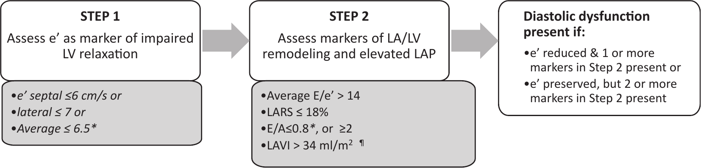
SECTION 6 平均LAP推定の主アルゴリズム（Figure 3）— 洞調律
3つの主要変数で判定する
Figure 3は平均LAPの推定とgradingを行う中核アルゴリズムで、LVEFによらず適用される。次の3変数を評価する。
側壁 ≤7・平均 ≤6.5 cm/s
側壁 ≥13・平均 ≥14
または PASP ≥35 mm Hg
3つ全て陰性 → Normal LAP（正常拡張機能）。e′低下のみ＋E/A ≤0.8 → Grade 1。
3つ全て陽性 → Increased LAP。E/A <2 なら Grade 2（軽〜中等度↑LAP）、E/A ≥2 なら Grade 3（著明↑LAP）。
1〜2変数のみ陽性／e′低下でE/A>0.8 → 追加変数で判定：肺静脈 S/D ≤0.67、LARS ≤18%、LAVi >34 mL/m²、代替的に IVRT ≤70 ms。これらが陽性なら高LAP、陰性ならLAP正常。
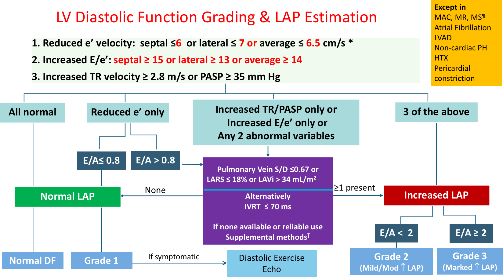
補足パラメータとレポート記載
判定が難しい時の補足指標：PR拡張末期速度 ≥2 m/s（またはPADP ≥16 mm Hg）、僧帽弁L波 ≥50 cm/s、QRS前の流入早期終了＋拡張期MR（LVEDP上昇）、肺静脈Ar >35 cm/s＋Ar-A >30 ms（早期stageのLVEDP上昇）、Valsalvaで E/A ≥50%減少。レポートには拡張機能grade・充満圧（正常／Grade 1／Grade 2[軽〜中等度↑LAP]／Grade 3[著明↑LAP]）を必ず記載し、grade判定不能ならLAP（正常/上昇）を、孤立性LVEDP上昇も明記する。
SUMMARY 第3章のキーメッセージ
SECTION 7 運動負荷拡張機能エコー — 安静時正常を捕まえる
適応と判定基準
HFpEFの最大50%は安静時LVFPが正常で、運動・下肢挙上で急上昇する。正常者ではe′が運動で平均3〜5 cm/s上昇する。最適な適応はGrade 1拡張障害（遅延弛緩＋安静時平均LAP正常）の症候性患者で、安静時に正常（e′保たれる）/高LVFPが明らかな例には不要。実施はsupine bicycleまたはtreadmillで、ドブタミン負荷は強く非推奨。
| 判定 | 基準 |
|---|---|
| 明確に異常（高LVFP） | 平均E/e′ ≥14 または中隔E/e′ ≥15 かつ peak TR velocity >3.2 m/s |
| HFpEF likely | E/e′ >14 かつ peak TR velocity >2.8 だが <3.2 m/s |
| 正常充満圧 | 平均（or 中隔）E/e′ <10 かつ peak TR velocity <2.8 m/s |
SECTION 8 AIの応用
機械学習による拡張機能評価
約100,000組の心エコー・心電図ペアを用いたrule-based/機械学習モデルが報告され、心電図所見が3 gradeの拡張障害を良好に識別し、心エコーと同様の予後価値を示した。連続的な拡張機能スコアの開発や、判定不能（indeterminate）症例の削減が期待される。
SUMMARY 第4章のキーメッセージ
SECTION 9 弁膜症 — MS・MR・MAC・TEER後・AS/AR
弁膜症ではE/e′が使えないことが多い
僧帽弁狭窄（MS）：高LAPの所見＝IVRT <60 ms、僧帽弁A波 >1.5 m/s、IVRT/TE-e′ <4.2（E/e′は無効）。僧帽弁逆流（MR）：Ar-A ≥30 ms（重症度によらず高LVEDPの良い指標）、IVRT <60 ms、IVRT/TE-e′ <5.6、平均E/e′ >14（低EF）。IVRT/TE-e′ <3 はEFによらずPCWP>15 mm Hgを予測。正常EFのprimary MRではE/e′は無効、LARSも有意MRでは充満圧と相関せずTEER後の変化検出に使えない。大動脈弁（AS/AR）：ASは通常ガイドライン適用可。重症ARで高LVFPを示す所見＝LA拡大・平均E/e′>14・LARS<18%・TR>2.8 m/s。
MAC（中等度/重症の僧帽弁輪石灰化）— Figure 4
MACでは僧帽弁通過血流が機械的に修飾されるため、E/A比とIVRTで判定する。
E/A <0.8 → LVFP正常
E/A >1.8 → LVFP上昇
E/A 0.8〜1.8 → IVRT測定：IVRT ≥80 ms → 正常、IVRT <80 ms → 上昇
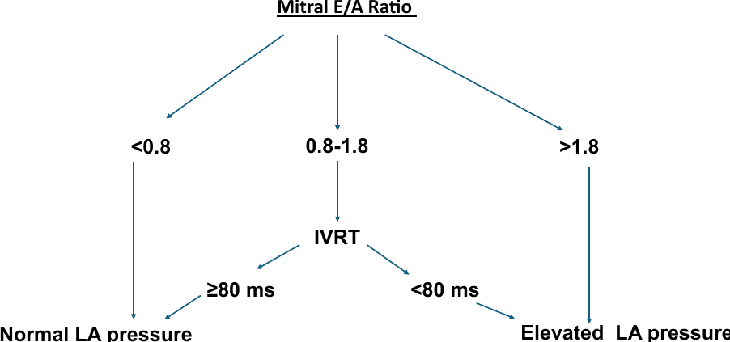
経カテーテル僧帽弁形成（TEER）後など、医原性の心房中隔左右シャントがある場合は LAP = 4V² + RAP（V＝心房中隔を横切る流速 m/s）で推定できる。shunt velocity >1.7 m/s で通常LAP上昇を示す。ただし両心室不全では有用でないことがある。
SECTION 10 心移植後（Figure 5）・肺高血圧（Figure 6）
心移植後 — E/e′とSR_IVR / TR速度（Figure 5）
脱神経による洞性頻脈でE-A融合が起こり、正常donor心では保たれたEFでE/A ≥2が一般的。平均E/e′ <7 → 正常、>14 → 上昇。7〜14の中間域では3断面からSR_IVRを測り、mitral E ÷ SR_IVR ≤200 cm → 正常、>200 cm → 上昇。SR_IVR測定不可ならTR速度 ≤2.8 m/s → 正常、>2.8 m/s → 上昇。単一の拡張パラメータでgraft rejectionは予測できない。
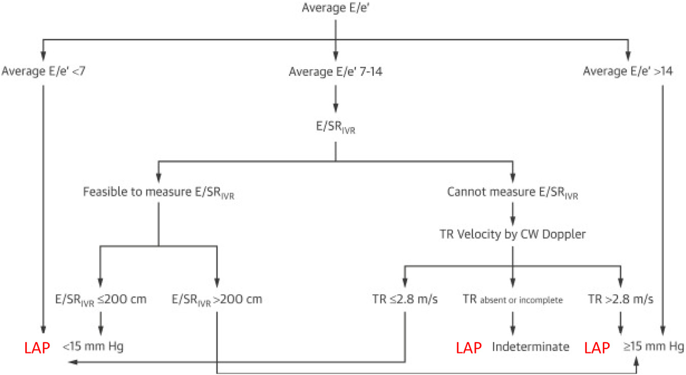
肺高血圧 — lateral E/e′ を使う（Figure 6）
PHでは中隔扁平化のため平均ではなくlateral E/e′を用いる（>13→高LVFP、<8→正常、8〜13→判定不能）。E/A ≤0.8は非心臓性（precapillary）PH、E/A ≥2はgroup II（postcapillary）PHを示唆。E/A 0.8〜2の中間域ではLARS（>18%→正常、≤18%→上昇）、利用不可ならlateral E/e′で判定。LAVi >34 mL/m²・lateral E/e′ >13・LARS <18% はgroup II PHを支持する。
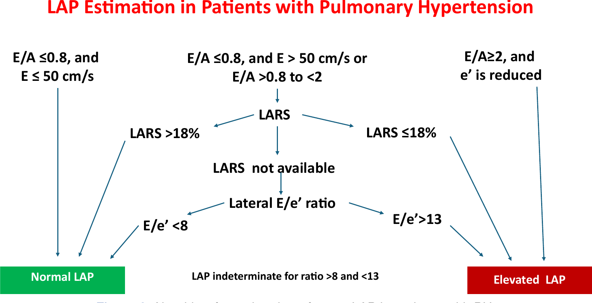
SECTION 11 伝導障害・拘束型心筋症・心膜収縮（Figure 7）・HCM・心房細動（Figure 8）
伝導障害・ペーシング
1度房室ブロックは200〜280 ms ならEF・心拍正常で通常許容。>280 ms（特に弛緩障害・頻脈・脚ブロック・心室ペーシング合併時）でE-A融合が起こる。PR >320 msではE-A融合→単相性A波＋拡張期MR。LBBB・RVペーシングは中隔e′を低下させ中隔/平均E/e′が不正確となるため、lateral E/e′が有効でありうる。A波のみの場合はpeak TR velocity >2.8 m/sを充満圧指標に。
拘束型心筋症と心膜収縮の鑑別（Figure 7）
拘束型心筋症：進行例の拘束生理＝E/A >2.5、DT <150 ms、IVRT <50 ms、中隔・側壁e′低下（3–4 cm/s）、GLS低下、LA strain低下。心アミロイドーシス進行例では弁輪速度の「5-5-5」サイン（s′・e′・a′すべて <5 cm/s）とapical sparing（apical/basalストレイン比増加）。心膜収縮：呼吸性中隔シフト・septal bounce・呼吸性の弁通過血流変動（>25%／40%）・肝静脈呼気時拡張末期逆流（逆流/順行velocity ≥0.8）。心膜収縮では中隔e′ >7 cm/sが多い（拘束型では通常 ≤5 cm/s）、annulus reversus・strain reversusも特徴。正常な中隔弁輪e′＋HF所見なら心膜収縮を疑う。
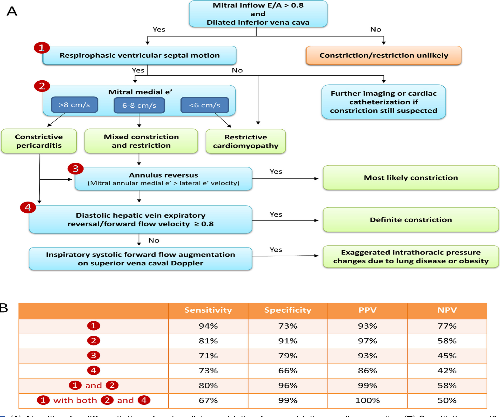
HCM
推奨変数は僧帽弁流入・肺静脈・弁輪速度・peak TR velocity・biplane LA容積。高LVFPの指標は平均E/e′ >14、Ar-A ≥30 ms、peak TR velocity >2.8 m/s、LA最大容積係数 >34 mL/m²。MRはAr速度に影響しないため、Ar速度/durationでLVEDP推定が可能（心房筋症・1度房室ブロックがない場合）。拘束充満＋E/e′上昇は心不全入院・運動耐容低下・突然死と関連する。
心房細動 — 複数変数で判定（Figure 8）
AFでは単一パラメータでは不十分で、複数心拍の平均値（平均心拍を反映する周期）を用いる。4変数：① 僧帽弁E ≥100 cm/s、② 中隔E/e′ >11、③ TR >2.8 m/s または PASP >35 mm Hg、④ DT ≤160 ms。3つ以上 → Elevated LAP、2つ → 追加（LARS <18%・肺静脈S/D <1・BMI >30：2/3以上で上昇）、0〜1個 → Normal LAP。dual Dopplerで同一心拍からE・e′を記録するとPCWP推定精度が向上する。
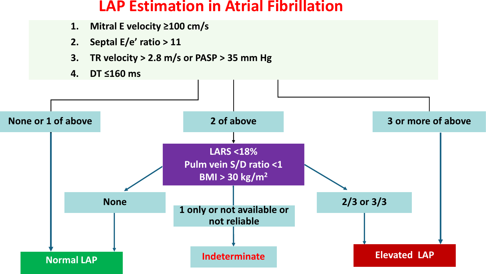
特殊集団の高LVFP指標 一覧（Table 7）
| 病態 | 高LV充満圧を示す心エコー所見 |
|---|---|
| 心房細動 | DT<160 ms（低EF）／E波最大加速度≥1,900 cm/s²／IVRT≤65 ms／肺静脈拡張期DT≤220 ms／E/Vp≥1.4／中隔E/e′≥11／TR>2.8 m/s |
| 洞性頻脈 | IVRT≤70 ms（特異度79%）／肺静脈systolic filling fraction≤40%（特異度88%）／平均E/e′>14 |
| HCM | 平均E/e′>14／Ar-A≥30 ms／TR>2.8 m/s／LA最大容積係数>34 mL/m² |
| 拘束型心筋症 | 平均E/e′>14／DT<140 ms／E/A>2.5／IVRT<50 ms |
| 肺高血圧 | E/A≥2→postcapillary／E/A≤0.8→precapillary／中間域はlateral E/e′>13・LAVi>34・LARS<18% |
| 僧帽弁狭窄 | IVRT<60 ms／僧帽弁A波>1.5 m/s／IVRT/TE-e′<4.2 |
| 僧帽弁逆流 | IVRT<60 ms／Ar-A≥30 ms／IVRT/TE-e′<5.6／平均E/e′>14（低EF） |
| 中等度/重症MAC | E/A<0.8→正常／E/A>1.8→上昇／0.8〜1.8はIVRT（≥80→正常／<80→上昇） |
| LVAD | E/A>2／RAP>10／PASP>40／平均E/e′>14 or 中隔≥15／LA最大容積係数>33 |
| 心移植 | 平均E/e′<7→正常／>14→上昇／7〜14はE/SR_IVR（≤200→正常／>200→上昇） |
SUMMARY 第5章のキーメッセージ
SECTION 12 HFpEFの臨床診断・NP・予測スコア
臨床診断とナトリウム利尿ペプチド（NP）
HFpEFはうっ血性心不全の徴候/症状＋LVEF ≥50%で、他の心臓/非心臓原因を除外して診断する。pretest probabilityを高める因子は高血圧・高齢（>60歳）・肥満（BMI >30 kg/m²）・糖尿病・心房細動（HFpEFの15〜41%に併存）。NP（BNP・NT-proBNP）はHFrEFより低値で肥満でさらに低値となり、HFpEFの最大30%はNP正常。よって正常NPはHFpEFを除外しない（特に肥満例）。
HFpEF予測スコア — H₂FPEFスコア
Reddyら（414例）のH₂FPEFスコア（0〜9点）。各項目を加点し、確率を推定する。
SECTION 13 鑑別診断・侵襲的検査・診断アルゴリズム（Figure 9）
鑑別すべき疾患（Table 9）と侵襲的検査
鑑別（心筋性）：拘束型心筋症、心アミロイドーシス、心内膜心筋線維症、Fabry病、ヘモクロマトーシス、HCM、心筋虚血、HF with recovered EF、肺動脈性肺高血圧など。（非心筋性）：弁膜症（>軽度狭窄/≥中等度逆流）、心膜疾患（収縮性/滲出性収縮性）、高拍出性HF。（非心臓性）：肺疾患・貧血・静脈不全。HFpEFにおけるTTR心アミロイドーシス有病率は5〜13%（前向きendomyocardial biopsy研究では14%が心アミロイドーシス）。侵襲的検査（gold standard）：右心カテーテルで 安静時PCWP >15 mm Hg、または運動時 ≥25 mm Hg（呼気終末で測定）でHFpEF一致。運動不能例はsaline loading（運動より低感度）。
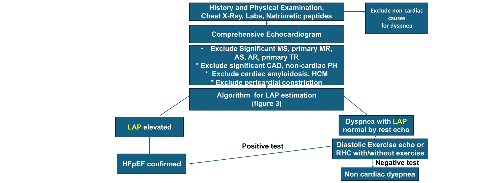
HFpEFのコンセンサス定義（Table 8）
| 項目 | ACC/AHA/HFSA | ESC |
|---|---|---|
| 定義 | EF ≥50% ＋ 症状/兆候 ＋ 拡張機能障害 | EF ≥50% ＋ 症状/兆候 ＋ NP上昇 ＋ 構造的心疾患または拡張機能障害の1つ以上 |
| 構造的異常（ESC） | — | LAVi >34 mL/m²／LVMi ≥115（男）・≥95 g/m²（女） |
| 機能的異常（ESC） | — | E/e′ ≥13／平均e′（中隔と側壁）<9 cm/s |
| NP | 臨床的不確実時にHF診断の指針 | 診断/除外の指針。正常値はHFを除外 |
| 侵襲検査 | 治療抵抗性/特定の疑問にRHC（狭心症合併はLHC推奨） | 安静時RHC（PCWP<15なら運動hemodynamics） |
SUMMARY 第6章のキーメッセージ
出典：Nagueh SF, Sanborn DY, Oh JK, et al. Recommendations for the Evaluation of Left Ventricular Diastolic Function by Echocardiography and for Heart Failure With Preserved Ejection Fraction Diagnosis: An Update From the American Society of Echocardiography. J Am Soc Echocardiogr 2025;38:537–569.
DOI：https://doi.org/10.1016/j.echo.2025.03.011
本資料は教育目的で作成したサマリーです。診断・治療方針の決定には必ず原典ガイドラインを参照してください。
制作：ICU 関谷